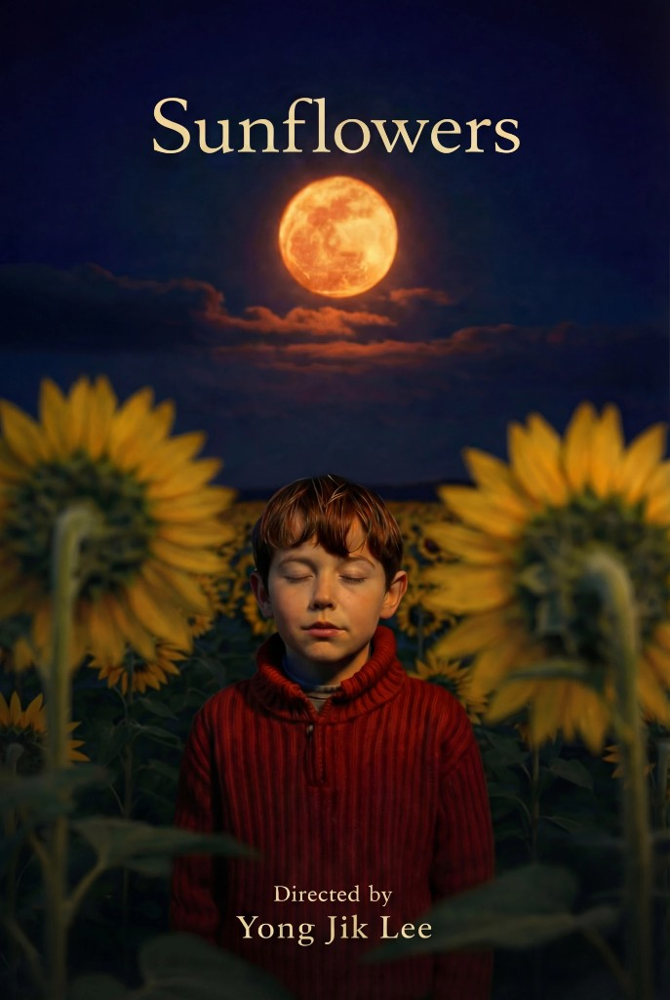
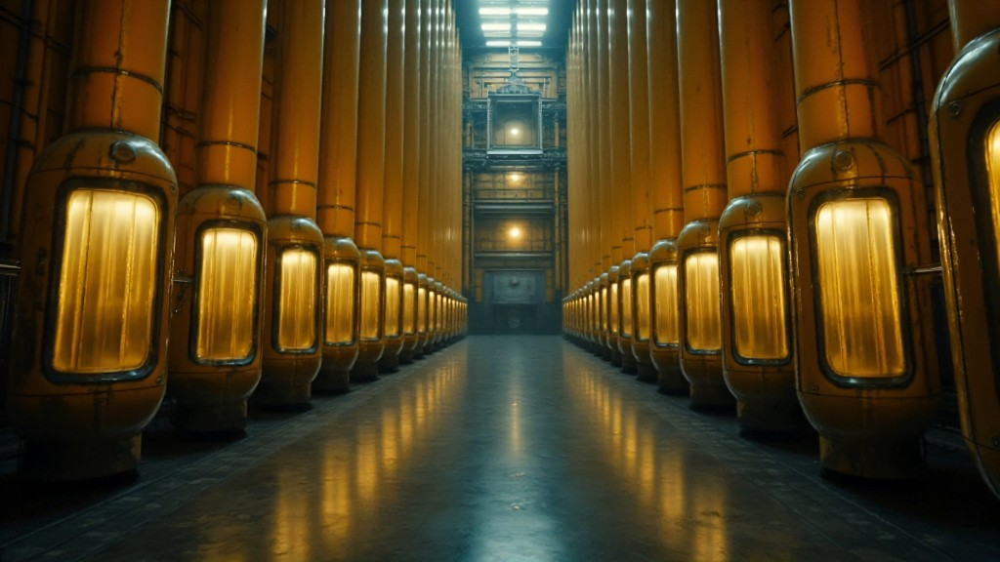

Sunflowers
Written & Directed by Yong Jik Lee
- Best AI Winner (2025), 17th New Media Film Festival® Los Angeles, USA
- Best AI Film Nominee Cannes World Film Festival
The film explores the intersection of history, memory, and future ethics through a unique fusion of storytelling and emerging technology. Inspired by forgotten chapters of the past, it reimagines human struggles and institutional failures while asking how we might design a more responsible future. The narrative connects historical events with speculative visions, inviting audiences to reflect on dignity, resilience, and the evolving relationship between humanity and technology.
Director’s Statement
For over two decades, I have trained young creators in 3D and digital art through vocational education. Yet within me remained a quiet yearning — to express my view of the world through my own lens.
Cinema became the language I longed for, but the barriers of capital and system rarely allowed an individual voice to emerge freely. The rise of AI technology cracked those walls, and through that narrow opening I found a ray of light.
Sunflowers grew from this intersection — a story about how history, memory, and future ethics collide when humanity faces systems of exploitation and technological displacement. Through a hybrid pipeline blending AI imagery with traditional craft, the film asks how we might remember the past while imagining more responsible futures.
Sunflowers marks my first step onto the international stage — a testament to an era where technology once again liberates human imagination.


